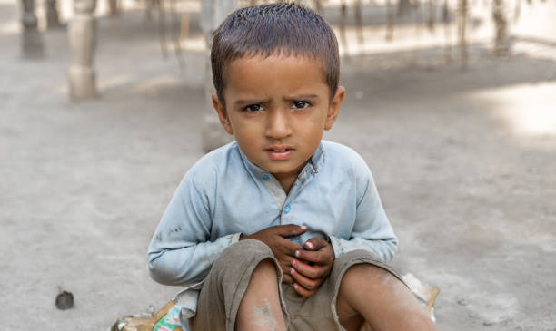
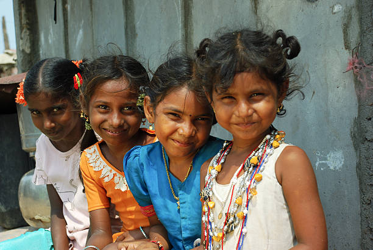
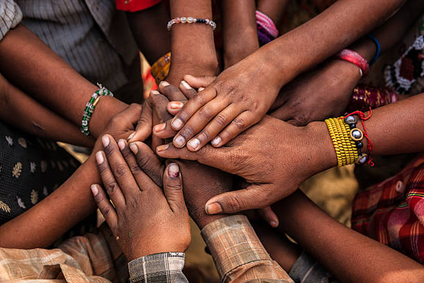

Why Orphan Support Matters
Every child deserves love, care, and the opportunity to dream. Yet, many children grow up without the support of a family, facing challenges that affect their emotional well-being, education, and future.
Without proper guidance and resources, these children are more vulnerable to poverty, neglect, and limited opportunities. Providing them with access to education, healthcare, and a safe environment helps them build confidence and a sense of belonging. By supporting orphaned and underprivileged children, we empower them to break the cycle of hardship and create brighter, independent futures. Together, we can give them hope, stability, and the chance to thrive.